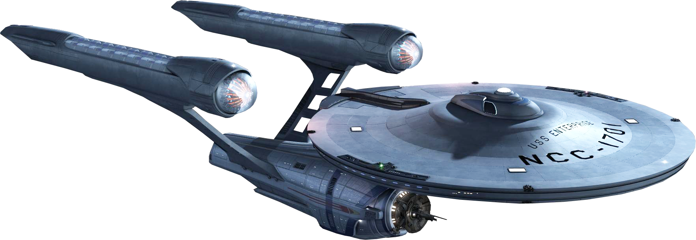

Headed by Jean-Luc Picard, the Starship Enterprise is one of the most impressive ships in the fleet, as well as the most slay.
Want to find more information about the specs of this lovely ship? check out Enterprise Specifications
While the Voyager easily has the most gay people on board of any ship in the fleet, it is also the most likely to get lost in space. Therefor, it is not as slay as the Enterprise.
Want to find more information about the specs of this gay as hell ship? check out Voyager Specifications
Jean-Luc Picard
Data
Spock
James T. Kirk
Kathryn Janeway
Seven of Nine
First, there was nothing. Then, there was the gays.